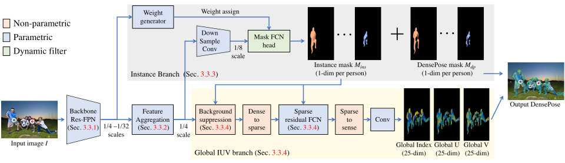
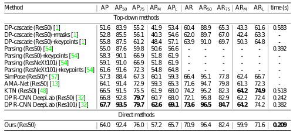

Dense human pose estimation is the problem of learning dense correspondences between RGB images and the surfaces of human bodies, which finds various applications, such as human body reconstruction, human pose transfer, and human action recognition. Prior dense pose estimation methods are all based on Mask R-CNN framework and operate in a top-down manner of first attempting to identify a bounding box for each person and matching dense correspondences in each bounding box. Consequently, these methods lack robustness due to their critical dependence on the Mask R-CNN detection, and the runtime increases drastically as the number of persons in the image increases. We therefore propose a novel alternative method for solving the dense pose estimation problem, called Direct Dense Pose (DDP). DDP first predicts the instance mask and global IUV representation separately and then combines them together. We also propose a simple yet effective 2D temporal-smoothing scheme to alleviate the temporal jitters when dealing with video data. Experiments demonstrate that DDP overcomes the limitations of previous top-down baseline methods and achieves competitive accuracy. In addition, DDP is computationally more efficient than previous dense pose estimation methods, and it reduces jitters when applied to a video sequence, which is a problem plaguing the previous methods.
The ResNet-FPN based backbone is first used to extract a feature pyramid. Then, the feature aggregation module is applied to aggregate the feature pyramid into a global feature representation. Such a global feature is then fed into the instance branch and global IUV branch, respectively, to estimate the instance-level masks and the global IUV representation. Note that, for each instance, the Mask FCN weights are generated dynamically via a weight generator.

Applying image-based methods to video data directlyleads to the undesirable flickering issue, since the temporal information is not considered. To address this, we introduce a simple and effective 2D temporal-smoothing scheme.
Comparisons
Top-down methods (e.g. [1]) suffer from early commitment (part missing red) and heavy compression (inaccurate boundary blue).
The quantitative results on DensePose-COCO minival split. * Models are trained with a simulated dataset.

Application on image-to-image translation
We also apply our method on the human pose transfer task, i.e. translate the dense pose IUV representation input to an RGB image. We adopt the popular pix2pixHD [2] as our translation model and generate the image frame-by-frame. We observe that our temporally smooth dense pose can help alleviate video flickering issue and generate stable video results.
Advantages
Avoiding issues in top-down framework including early commitment, overlapping ambiguity, heavy compression and computation.
Producing temporal smoothing results on video data.
Limitations
Sensitive to scale variation and may produce noisy results (red circles).
Failure to detect some heavily occluded small people (yellow circles).
Temporal smoothing scheme may fail in textureless region or varying illumination where the optical flow estimation is not robust.
References:
[1] Neverova, Natalia, et al. Continuous surface embeddings. In NeurIPS 2020.
[2] Wang, T. C., et al. High-resolution image synthesis and semantic manipulation with conditional gans. In ICCV 2019.